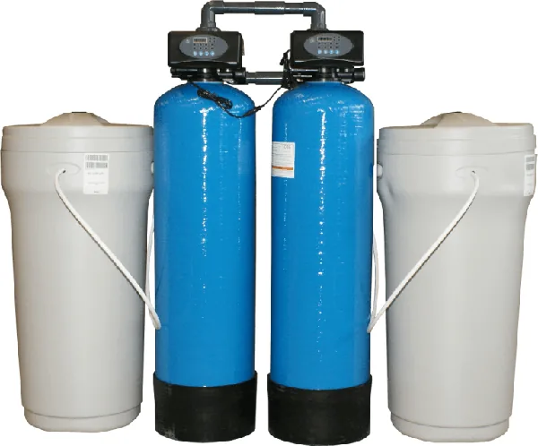
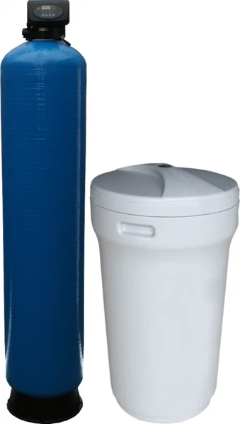
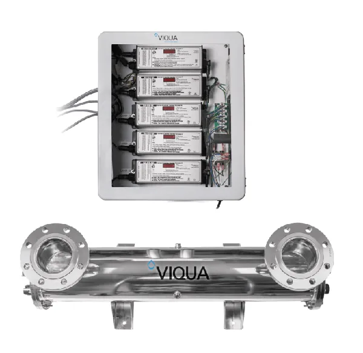
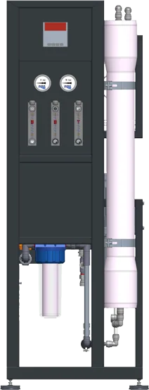
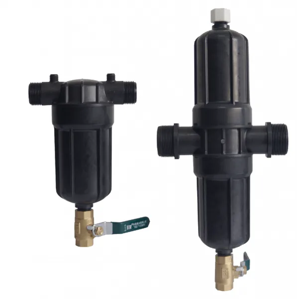
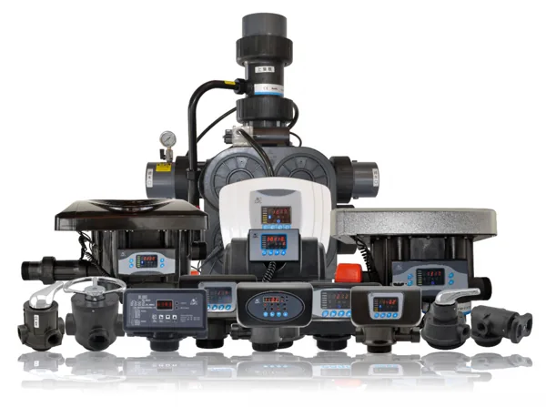
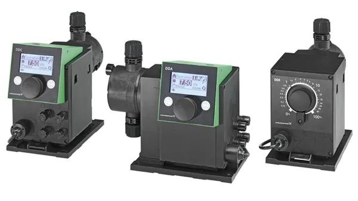
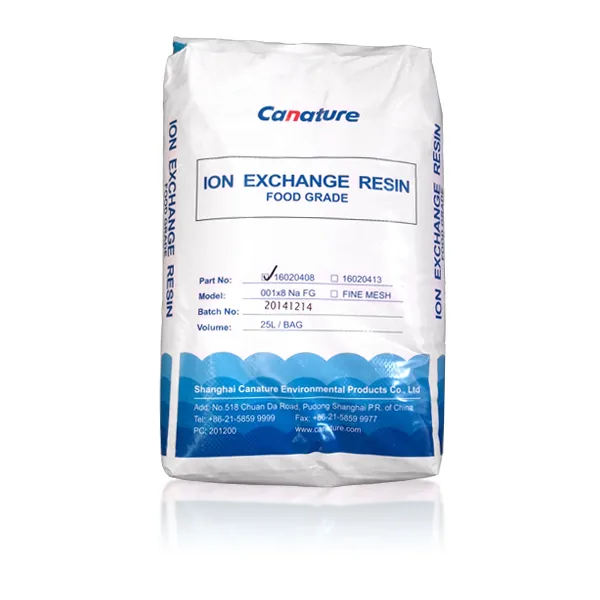
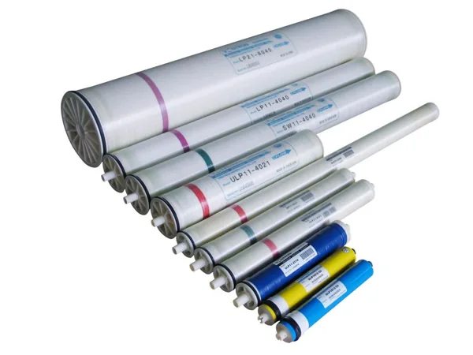

Filtre mecanice
- Cintropur
- Big Blue
- Azud
- Filtre pentru apă caldă
- Denisipatoare
Echipamente de la producători de renume, alese și dimensionate după analiza apei dumneavoastră. Nu știți ce vă trebuie? Spuneți-ne problema și vă recomandăm soluția potrivită.
Cere ofertăOsmoza inversă este una dintre cele mai eficiente metode de îndepărtare a contaminanților primari foarte periculoși: arsenic, azbest, atrazină (erbicide și pesticide), fluoruri, plumb, mercur, nitrați, nitriți și radiu.
Filtrele cu cărbune activ incluse în majoritatea sistemelor de osmoză rețin și contaminanții organici volatili, cum sunt benzenul, tricloretilena și trihalometanii, precum și radonul.
Sistemele de osmoză inversă îndepărtează și paraziți periculoși pentru sănătate, precum Giardia și Cryptosporidium.
Pentru piscine rezidențiale, pensiuni, hoteluri și bazine publice.
Echipamente produse de Euro-Clear (Ungaria), furnizorul nostru principal pentru gama industrială. Toate au aviz sanitar pentru România. Le dimensionăm după analiza apei și debitul de care aveți nevoie, apoi le montăm și le întreținem.

Apa de puț și multe ape de rețea conțin mult calciu și magneziu. Acestea depun piatră în conducte, boilere, schimbătoare de căldură și utilaje, le scad randamentul și le scurtează viața. Dedurizatorul schimbă ionii de calciu și magneziu cu ioni de sodiu, care nu depun calcar.

Aproape orice fabrică are cel puțin un filtru de apă, fie că folosește apă de rețea, de puț sau de răcire. Alegem tipul de filtru după cantitatea de suspensii din apă și după rezultatul pe care îl doriți.

Dezinfecție fără chimicale, cu sterilizatoarele VIQUA HighFlow (producător canadian cu peste 40 de ani de experiență), livrate prin Euro-Clear. Lumina UV inactivează bacteriile și virusurile fără să schimbe gustul apei.
Pentru industria alimentară, îmbuteliere, lactate, berării, crame, ferme, turnuri de răcire și farmaceutică.

Osmoza inversă reține prin membrană aproape toate sărurile, metalele grele, substanțele organice și bacteriile. Poate produce apă cu conductivitate de până la 10 µS/cm și a înlocuit în mare parte vechile stații de demineralizare cu schimb ionic.
Membranele sunt partea cea mai scumpă a instalației. Cu o pretratare bună (filtru de 5 µm, la nevoie dedurizare, deferizare sau decolorare cu cărbune activ), ele funcționează mulți ani. Cu o pretratare slabă, se pot strica în câteva luni. De aceea pornim întotdeauna de la analiza apei.
Dacă aveți nevoie de apă și mai pură (de exemplu pentru cazane de abur), adăugăm o treaptă finală cu schimb ionic în pat mixt sau EDI.

Rețin nisipul, rugina și impuritățile mai mari de 0,1 mm, înainte ca acestea să ajungă în rețea, în utilaje sau în echipamentele de tratare.
Piese de schimb și consumabile pentru întreținerea și modernizarea stațiilor de tratare, din stocul european Euro-Clear, deci cu livrare rapidă.

„Creierul” dedurizatoarelor și filtrelor automate: pornesc la timp spălarea și regenerarea.

Pentru clorinare, corecția pH-ului și dozarea reactivilor, de exemplu a antiscalantului înainte de osmoză.

